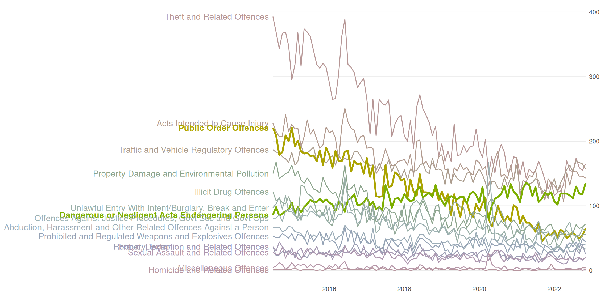

library(tidyverse)
legend_text_size <- 6Lab4 - Visual Perception
See the assignment description and model answer (for the source .Rmd model answer, just change “html” to “Rmd” in the link).
Loading packages.
The data and questions of interest
Data shows rows of incidents handled by the Police.
We wish to answer questions about youth offending (up to age 19).
crime <- read.csv("nzpolice-proceedings.csv")
crime$Month <- as.Date(crime$Date)
youth <- subset(crime, Age.Lower == 15)
head(youth) Age.Lower Police.District ANZSOC.Division
1 15 Tasman Acts Intended to Cause Injury
5 15 Auckland City Acts Intended to Cause Injury
6 15 Auckland City Acts Intended to Cause Injury
22 15 Auckland City Dangerous or Negligent Acts Endangering Persons
23 15 Auckland City Dangerous or Negligent Acts Endangering Persons
41 15 Auckland City Illicit Drug Offences
SEX Date Month
1 Female 2015-12-01 2015-12-01
5 Female 2015-12-01 2015-12-01
6 Female 2015-12-01 2015-12-01
22 Female 2015-12-01 2015-12-01
23 Female 2015-12-01 2015-12-01
41 Female 2015-12-01 2015-12-01Create a Type variable that contains the crime type with nice formatting and ordered labels.
# divLevels <- levels(factor(youth$ANZSOC.Division))
# divLabels <- unlist(lapply(strwrap(divLevels, width=30, simplify=FALSE),
# function(x) {
# if (length(x) < 3)
# x <- c(x, rep(" ", 3 - length(x)))
# paste(x, collapse="\n")
# }))
types <- table(youth$ANZSOC.Division)
typeLevels <- names(types)[order(types, decreasing=TRUE)]
typeLabels <- sapply(strwrap(typeLevels, width=30, simplify=FALSE),
function(x) {
if (length(x) < 3)
x <- c(x, rep(" ", 3 - length(x)))
paste(x, collapse="\n")
})
youth$Type <- factor(youth$ANZSOC.Division, levels=typeLevels, labels=typeLabels)
youthType <- as.data.frame(table(youth$Type))
head(youthType) Var1 Freq
1 Theft and Related Offences\n \n 23280
2 Acts Intended to Cause Injury\n \n 17456
3 Traffic and Vehicle\nRegulatory Offences\n 15737
4 Public Order Offences\n \n 12358
5 Dangerous or Negligent Acts\nEndangering Persons\n 11144
6 Property Damage and\nEnvironmental Pollution\n 9534Create a monthType variable that is ordered by the first month.
monthTypes <- table(youth$ANZSOC.Division, youth$Month)[,1]
monthTypeLevels <- names(types)[order(monthTypes, decreasing=TRUE)]
monthTypeLabels <- unlist(lapply(strwrap(monthTypeLevels, width=30,
simplify=FALSE),
function(x) {
if (length(x) < 3)
x <- c(x, rep(" ", 3 - length(x)))
paste(x, collapse="\n")
}))
youth$monthType <- factor(youth$ANZSOC.Division, levels=monthTypeLevels, labels=monthTypeLabels)
youthMonthType <- as.data.frame(table(youth$Month, youth$monthType))
youthMonthType$Month <- as.Date(youthMonthType$Var1)
head(youthMonthType) Var1 Var2 Freq Month
1 2014-07-01 Theft and Related Offences\n \n 393 2014-07-01
2 2014-08-01 Theft and Related Offences\n \n 369 2014-08-01
3 2014-09-01 Theft and Related Offences\n \n 343 2014-09-01
4 2014-10-01 Theft and Related Offences\n \n 367 2014-10-01
5 2014-11-01 Theft and Related Offences\n \n 369 2014-11-01
6 2014-12-01 Theft and Related Offences\n \n 348 2014-12-01Questions of interest
For the data set of youth crimes (having filtered data to include only those ages 15-19), we want to investigate:
- What is the most and least common types of crimes?
- How do the three most common types of crime compare?
- Compare “Public Order Offences” and “Dangerous or Negligent Acts Endangering Persons” crime types
Data visualisations and questions
Question 1
We create the plot using geom_col combined with coord_polar.
ggplot(youthType, aes(x = "", y = Freq, fill = Var1)) +
geom_col() +
coord_polar(theta = "y") +
labs(x = "", y = "", fill = "ANZSOC.Divison", title = "Overall Number of Incidents") +
theme(legend.text = element_text(size = legend_text_size))Questions of interest
It’s clear that “Theft and related offences” is the most common type of crime. We see that “Homicide and related offences” is the least common type of crime, but mostly we deduce that from the label, as it is hard to see on the pie chart.
It looks like the most common crime type “Theft and related offences” is slightly more common than “Acts intended to cause injury”, which is only very slightly more common than “Traffic and vehicle regulatory offences”.
“Public Order Offences” and “Dangerous or Negligent Acts Endangering Persons” are not differentiable from the pie chart, only due to the label. We cannot comment on time trend between these crime types.
Visual channels and perception
Angle is used as a channel to represent the data value (frequency of crime). The area can also be used to identify the data value, making it a channel as well. Colour is used as a channel for the crime types.
The plot presents an issue that is unavoidable with pie charts. Healy writes that “… our visual system is trying to construct a representation of what it is looking at based more on relative differences…”. For pie charts, judging the angle and area in a pie chart, differences are almost always judged smaller than they actually are. In the plot, it’s not obvious that the frequency of “Theft and related offences” is almost 50% more than “Acts intended to cause injury”.
We create a new plot with white lines between the areas.
ggplot(youthType, aes(x = "", y = Freq, fill = Var1)) +
geom_col(color = "white") +
coord_polar(theta = "y") +
labs(x = "", y = "", fill = "ANZSOC.Divison", title = "Overall Number of Incidents") +
theme(legend.text = element_text(size = legend_text_size))
Personlly, I think the difference between the most common and 2nd most common crime type looks bigger in this plot than the previous. So it does help a bit, but not as much as using length as a channel ranger than area and angle.
Question 2
Better
As noted at the end of the previous section, a bar plot would do a better job of showing the data values, using length as a channel. Wilke notes that “… if a data value is encoded entirely as a distance, as is the case with the length of a bar, we perceive it more accurately than when the data value is encoded through a combination of two or more distances that jointly create an area.”.
ggplot(youthType, aes(x = Var1, y = Freq, fill = Var1)) +
geom_col() +
labs(fill = "ANZSOC.Divison", title = "Overall Number of Incidents") +
theme(axis.ticks.x = element_blank(),
axis.title.x = element_blank(),
axis.text.x = element_blank(),
legend.text = element_text(size = legend_text_size))Worse
A channel that can be used beside area or length is position on unaligned scales, which in this case combined with small multiples gives a plot that should rather just be a table, as the visual representation gives us no relative differences in terms of anything other than numbers on the y-axis.
ggplot(youthType, aes(x = Var1, y = Freq, color = Var1)) +
geom_point() +
facet_wrap(~ Var1, scales = "free") +
labs(y = "", color = "ANZSOC.Divison", title = "Overall Number of Incidents") +
theme(axis.ticks.x = element_blank(),
axis.title.x = element_blank(),
axis.text.x = element_blank())Question 3
To re-create the plot, I create a data set only containing the crime types that we want to draw a white line for. We then create the white line using geom_line with this filtered data as the data as well as run geom_line again to make sure that the white and colored line of highlighted categories are layered on top of the other lines.
obsWithCat <- grepl("^(Public|Dangerous)", youthMonthType$Var2)
youthMonthType$highlightCat <- ifelse(obsWithCat, 1, 0)
youthMonthTypeHighlightCat <- youthMonthType %>%
dplyr::filter(highlightCat == 1)
ggplot(youthMonthType, aes(x = Month, y = Freq, color = Var2, group = Var2)) +
geom_line() +
geom_line(data = youthMonthTypeHighlightCat, color = "white", lwd = 4) +
geom_line(data = youthMonthTypeHighlightCat) +
labs(x = "", y = "", title = "Number of Incidents per Month", color = "ANZSOC.Division") +
theme(legend.text = element_text(size = legend_text_size))
Questions of interest
From this line plot, we can see that same regarding most and least common crime types. “Theft and related offences” is clearly the most common (atleast until about 2020), and the least common is hard to see, but we can judge by the legend. Here it becomes easier to see, however, that the difference between the third most common crime types diminishes with time. In 2014 “Theft and related offences” is almost double as frequent as the 2nd most common “Acts intended to cause injury”, but at around 2020, the 3 most common crime types are about the same frequency.
Regarding the categories “Public Order Offences” and “Dangerous or Negligent Acts Endangering Persons”, we see that the latter is on an increasing trend, whereas all other crime types seem to be on a downward trend. It increased from a frequency of just under 100 per month in 2014 to almost 150 per month in 2022. Comparing this to “Public Order Offences”, this is the crime type with the biggest decrease, going from a frequency above 200 in 2014 to a frequency just above 50 in 2022.
Preattentive pop out and Gestalt Rules
What “pops out” immediately is the coloring of the lines according to crime types as well as the highlighted lines with a white background
Gestalt rules
- Connection: The lines are coloured within each crime type, making a connection between the data points that make out each line
- Figure and Ground: We use the fact that our plot is layered to have a grey background and then use the contrast of white to highlight our colored lines
- Common fate: Almost all of the lines are moving downward (except the one we commented on above), meaning we quickly associate the same trend to almost all crime types
- Proximity: When the lines are close, we know immediately that the frequencies of crimes are similar
Question 4
Default colour palette used in ggplot2 is generated by scales::pal_hue(). To desaturate the colors for some of the categories, we can use colorspace::desaturate.
We create the plot by mapping aesthetics of color and linewidth to the crime type variable Var2 and then scaling colors and linewidths such that our highlighted groups are not saturated and have a bigger linewidth. Note we do a separate call to geom_line with a subset of data with only the highlighted categories to make them go “on top”.
monthLabels <- levels(youthMonthType$Var2)
highlightCats <- grepl("^(Public|Dangerous)", monthLabels)
colors <- scales::pal_hue()(length(monthLabels))
colors[!highlightCats] <- sapply(
colors[!highlightCats], colorspace::desaturate, amount = 0.8
)
lwds <- setNames(rep(0.6, length(monthLabels)), monthLabels)
lwds[highlightCats] <- 1.2
ggplot(youthMonthType,
aes(x = Month, y = Freq, color = Var2, group = Var2, linewidth = Var2)) +
geom_line() +
geom_line(data = youthMonthTypeHighlightCat) +
scale_color_manual(name = "ANZSOC.Division", values = colors) +
scale_linewidth_manual(name = "ANZSOC.Division", values = lwds) +
labs(x = "", y = "", title = "Number of Incidents per Month") +
theme(legend.text = element_text(size = legend_text_size))Here we use the same visual channels as above by using color, but instead of drawing a background of white to highlight certain lines, we highlight the lines by making them thicker, thus also using a visual channel of thickness/area. We adjust the saturation (or chroma) of the other lines to not be as saturated as the highlighted lines, making the vibrant colors “pop out” more.
Question 5
We use the colorspace::deutan function to transform the colors to what a person with deuteranomaly would see and scale our colors to use this new palette.
colors_deutan <- colorspace::deutan(
colors
)
ggplot(youthMonthType,
aes(x = Month, y = Freq, color = Var2, group = Var2, linewidth = Var2)) +
geom_line() +
geom_line(data = youthMonthTypeHighlightCat) +
scale_color_manual(name = "ANZSOC.Division", values = colors_deutan) +
scale_linewidth_manual(name = "ANZSOC.Division", values = lwds) +
labs(x = "", y = "", title = "Number of Incidents per Month") +
theme(legend.text = element_text(size = legend_text_size))
Almost all colors look exactly alike. We see a blob of blue-ish lines close to the bottom, and then we have the yellow line that stands out. But otherwise, we just see a mess of grey-ish lines that are indistinguishable.
Question 6
To add grey lines for highlighted categories on each facet, we add a call to geom_line using a subset of the data containing only the highlighted categories, where we make sure to rename the facetting variable to something else, so it appears on all facets. To customise the x-axis, we use scale_x_date with a label specification being a function to allow us to change the display to year without century for years that are not 2022.
youthMonthTypeHighlightCatRenamed <- youthMonthTypeHighlightCat %>%
dplyr::rename(crimeType = Var2)
ggplot(youthMonthType, aes(x = Month, y = Freq, group = Var2, color = Var2)) +
geom_line(aes(group = crimeType),
data = youthMonthTypeHighlightCatRenamed,
color = "grey") +
geom_line() +
facet_wrap(~ Var2) +
labs(x = "", y = "",
title = "Number of Incidents per Month",
colour = "ANZSOC.Division") +
theme(legend.text = element_text(size = legend_text_size),
strip.background = element_blank(),
strip.text = element_blank()) +
scale_x_date(labels = function(x)
strftime(x, ifelse(names(x) == 2022, "%Y", "%y"))
)We can see that the most common type of crime is “Theft…”, and like the other plots, the least common is very hard to identify from the plots, but the label in the legend can help us identify this, though with no gauge of how big the difference is between the least common types of crime.
In general the drawing of the 2 highlighted crime types lets us more easily compare between panels. We see that the most common crime type is much more common than the 2nd most common at the start of the data range, but ends up being very similar around 2022. The 3rd most common starts out almost as common as the 2nd, but decreases very rapidly and end up being much less common than the 1st and 2nd.
Regarding the highlighted categories, exactly the same comments as in Questions of interest in question 3 applies.
Thus, I think this plot actually does a pretty good job of letting us answer all the questions of interest.
Challenge 7
To create the plot, I
- Create a
textGrobfrom the longest string and take thegrobWidthto get the width needed to display the text. - Create a ggplot inside a viewport corresponding to all the width minus the width needed to display the text minus 2 mm to give some space
- The ggplot is created by making the line plot and using
gggrid::grid_groupto label the crime types.
- Enable writing the text “outside” the plot with
coord_cartesian(clip = "off")
youthMonthType$Var2noBreak <- factor(
youthMonthType$Var2, levels = typeLabels, labels = typeLevels
)
create_plot <- function(
label.fontsize = 12,
lwds = c(0.6, 1.2)) {
longest_str_ind <- which.max(stringr::str_width(youthMonthType$Var2noBreak))
longest_str <- as.character(youthMonthType$Var2noBreak[longest_str_ind])
dummy_grob <- grid::textGrob(longest_str, gp = grid::gpar(fontsize = label.fontsize))
text_width <- grid::grobWidth(dummy_grob)
monthLabels <- levels(youthMonthType$Var2noBreak)
highlightCats <- grepl("^(Public|Dangerous)", monthLabels)
colors <- scales::pal_hue()(length(monthLabels))
colors[!highlightCats] <- sapply(
colors[!highlightCats], colorspace::desaturate, amount = 0.8
)
lwds_vec <- setNames(rep(lwds[1], length(monthLabels)), monthLabels)
lwds_vec[highlightCats] <- lwds[2]
add_label <- function(data, coords) {
grid::textGrob(
data$label,
x = grid::unit(0, "npc") - grid::unit(2, "mm"),
y = grid::unit(coords$y[1], "npc"),
gp = grid::gpar(col = data$colour,
fontsize = label.fontsize,
fontface = ifelse(data$highlight, "bold", "plain")),
hjust = 1
)
}
p <- ggplot(youthMonthType,
aes(x = Month, y = Freq,
color = Var2noBreak, group = Var2noBreak, linewidth = Var2noBreak)) +
geom_line(show.legend = FALSE) +
scale_color_manual(values = colors) +
scale_linewidth_manual(values = lwds_vec) +
scale_y_continuous(position = "right") +
scale_x_date(expand = expansion(0, 0)) +
labs(x = "", y = "") +
theme_minimal() +
theme(axis.ticks.y = element_blank(),
panel.grid.major.x = element_blank(),
panel.grid.minor.x = element_blank(),
panel.grid.minor.y = element_blank()
) +
gggrid::grid_group(add_label,
aes(label = Var2noBreak,
highlight = highlightCat)) +
coord_cartesian(clip = "off")
grid::grid.newpage()
grid::pushViewport(
grid::viewport(
width = grid::unit(1, "npc") - text_width - grid::unit(2, "mm"),
x = grid::unit(1, "npc"),
just = c(1, .5)
)
)
print(p, newpage = FALSE)
grid::popViewport()
return(invisible())
}
create_plot()
Overall summary
We investigate the use of different visual channels and the impact of Gestalt rules throughout this lab. We see that some channels are “stronger” than others when we see in question 2 that we have a much easier time decoding data values from “lengths” of bars rather than angles/area of a pie chart.
We note in question 3 that we can take advantage of pre-attentive pop out, when we hightlight a couple interesting categories of data by putting a white bar behind those lines. In question 4 we though note that the pre-attentive pop out can be made even more clear by enlarging the lines for the highlighted categories themselves as well as “desaturate” the other categories. We do have to be careful anytime we work with color (which almost always works as a great pre-attentive pop out) that readers with color-vision-deficiency can interpret the plot. We investigate this in question 5 by showing the plot as a person with severe cvd would see it.
In question 6 we add a visual channel to not only categorise crime type by color but also by position, when we create a plot with small multiples. Additionally, we add lines from the highlighted groups, making interpretation of the data for those groups possible as well as providing a “canvas” that can be used to judge the positions of other groups relative to the highlighted groups, making comparison easier.